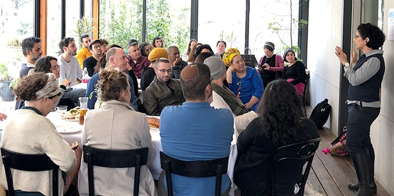

זו השנה השלישית לקיומה של תוכנית מנדל למנהיגות בתרבות יהודית, ואחת ממטרותיה המרכזיות של היא יצירת רשת פעילה של עמיתי התכנית ובוגריה המייצרים קשרים וחיבורים חדשים ויוצרים שיתופי פעולה חוצי מגזרים בחברה הישראלית. ב-24 בפברואר נפגשו לראשונה חברי הרשת – שלושת המחזורים הראשונים של תוכנית מנדל למנהיגות בתרבות יהודית: אנשי אמנות, קהילה, חינוך ותקשורת משדות וממגזרים שונים, העוסקים כולם בקידומה של התרבות היהודית בחברה הישראלית ובהעצמת והעשרה של החיים היהודיים כאן.
המפגש נפתח בסקירה של מנהלת מכון מנדל למנהיגות, יעל הס, על השינויים והחידושים במכון מנדל למנהיגות והרחבת העבודה עם בוגרי תוכניות קרן מנדל-ישראל.

מנהל תוכנית מנדל למנהיגות בתרבות יהודית, מישאל ציון, פתח את המפגש בהדגשת החשיבות של יצירת חיבורים בעידן של פילוג והסתגרות: ״תרבות נוצרת ממפגש בין גורמים שונים. יצירתיות וחידושים נולדים מייבוא של רעיונות ומציאויות ממרחב אחד למשנהו. הרשת הזאת מהווה הזדמנות ייחודית להחלפת רעיונות, לשיתוף בפרספקטיבות שונות לקריאת מציאות, וליצירת חיבורים חוצי גבולות של שדות מקצועיים ורעיוניים".
הרצון לייצר חיבורים חדשים ולקשר בין מובילי ומובילות תרבות הוביל לאתגר "סגירת משולשים", שבמהלכה התבקשו חברי וחברות הרשת לזהות שני אנשים שאינם מכירים זה את זה, ושהתרבות בישראל תהיה עשירה יותר אם ייפגשו. החדר מיד געש, רעש של בית מלאכה תרבותי – של שונים נפגשים, של מקצועות ושדות וזהויות נפגשות, של חברותות נוצרות ושתי וערב של תרבות שהולכת ונארגת חזק יותר.

לאחר התערבבות והיכרות בשלשות, התקיימו מעגלים מקצועיים בהנחיית חברי הרשת במטרה לייצר דיון פרופסיונלי סביב אתגרים והזדמנויות המזדמנים מתוך שדה התרבות היהודית בישראל. נושאי המעגלים:
שירת נשים בחברה הישראלית: הצעות לפתרון – בהובלת לבנת בן חמו (גלגלצ), חן ארצי סרור (ידיעות אחרונות) ועומר בן רובי (כאן). דיון על אפשרויות שונות לפתרון סוגיית הדרת נשים הוביל ליצירת ציר בין שיח ברמה ההלכתית לבין שאלות על פמיניזם הנוגעות למידת השמעת נשים בתקשורת.
אמנות ישראלית ויהודית: תמונת מצב – בהובלת רונן יצחקי (בין שמים לארץ), ליאור גריידי (מנשר) ופורת סלומון (פרדס). "אמנות-יהודית" - המקף החוצץ בין אמנות ליהודית העסיק רבות את יושבי המעגל. התקיים דיון ער על הקשר בין השניים בהקשר של הגוף היהודי, דימויו, אפיוניו והשלכותיו.
הובלה בתרבות ואמנות: ניהול, צמיחה וגדילה – בהובלת רחל קשת (תאטרון רחל קשת), רחל גץ סלומון (הארץ) ואורלי פורטל (להקת מחול אורלי פורטל). פעמים רבות אנו מכירות ומכירים את איזון בית-עבודה, אולם למנהלים אמנותיים ישנו איזון נוסף המשמש כאבן יסוד בעשייתם: איזון יצירה-ניהול. חברות המעגל דנו בדרכים לניהול היחסים המקצועיים על ציר יוצרת-מנהלת אמנותית.
התחדשות יהודית והתחדשות קהילתית – בהובלת חלי ברקת-טביבי (רשות הרבים), עודד מזור (קהילת כל הנשמה), ומור שמעוני (קהילת בינ"ה בתל אביב). חברי הקבוצה שיתפו במיזמים הקהלתיים שהם מובילים ובאתגרים של השדה. בשיחה עלו ההבדלים בין "קהילה" ו"קהילתיות", והדומה והשונה בניהול קהילות – וירטואליות, ממשיות, בתי-כנסיות ועוד.

בסיום המפגש התקיימה הקרנת טרום-בכורה של סרטה של קרן ידעיה "מאמי". שלוש פרספקטיבות של חברות הרשת העוסקות בתחום הקולנוע הציתו דיון על סוגיות אתניות, מעמדיות וחברתיות העולות בעשייה התרבותית בישראל, ואת זוויות הפעולה השונות של חברי הרשת.
השיחות והמעגלים השונים העלו תדיר את אחת השאלות המרכזיות העולות במכון מנדל למנהיגות: "מה מצב השדה? מה ה-state of the art בתחום בארץ ובעולם?" ההתכנסות של חברי הרשת – בעצמם מובילים ויזמים בשדות רבים ומגוונים – אפשרה לייצר תמונת מצב עדכנית ורחבה של התרבות היהודית והישראלית, והציתה מחשבות על אפשרויות חדשות.
{kind=link}